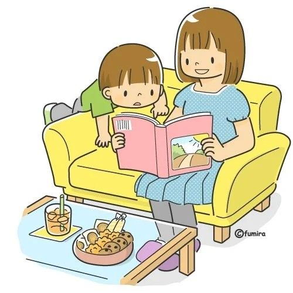

Reunión de Padres de Familia
Fecha: 20 de octubre, 2025
Invitamos cordialmente a todos los padres de familia a participar en la reunión semestral, donde se abordarán temas académicos y actividades del próximo trimestre.
Bienvenidos al espacio para padres del Jardín Infantil. Aquí encontrarás información útil, consejos y materiales para apoyar el aprendizaje y bienestar de tus hijos desde casa.
Consulta las fechas importantes del año escolar como los días feriados.

Descubre ideas, guías y estrategias para acompañar el aprendizaje desde el hogar. Los padres son parte esencial del desarrollo educativo.
Encuentra recomendaciones prácticas para fomentar la empatía, la autonomía y el desarrollo emocional de tus hijos.
Mantente informado sobre eventos, reuniones y avisos importantes del centro educativo.
Fecha: 20 de octubre, 2025
Invitamos cordialmente a todos los padres de familia a participar en la reunión semestral, donde se abordarán temas académicos y actividades del próximo trimestre.
Inicio: 1 de noviembre, 2025
Participa junto a tu hijo en la campaña "Leemos Juntos", fomentando el hábito de la lectura desde casa.